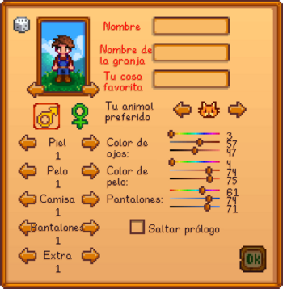
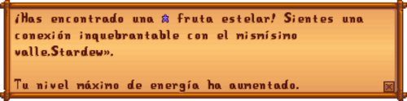
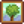
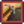
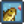
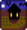
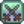
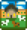

Guia de Inicio:
Stardew Valley es un juego sin final, que permite al jugador cumplir objetivos de manera no lineal. Hay varias formas de obtener beneficios entre muchas actividades para elegir, incluyendo a la agricultura, la pesca, la recolección silvestre, la minería, el combate (lucha contra enemigos), la fabricación de objetos, la cocina, la entrega de regalos, la realización de misiones y la restauración del Centro Cívico.
Creación del personaje:
La pantalla de creación de personaje permite opciones de personalización, como el aspecto del personaje, el sexo, el nombre, el nombre de la granja, la cosa favorita y la preferencia entre animales a usar como mascota.
- Puedes elegir entre 2 géneros, 24 tonos de piel, 73 peinados, 112 camisas, 4 pantalones, 20 accesorios y 10 mascotas (5 gatos y 5 perros) para elegir.
- Los aldeanos se referirán a ti coincidiendo con el caso en que pongas tu nombre, por ejemplo, si pones todo en minúsculas, la primera letra no se corregirá a mayúsculas. (confirmado en móviles iOS y Nintendo Switch)
- Las barras de desplazamiento junto al color de ojos, color de pelo, y color de pantalones, representan el matiz, saturación, y luminosidad.
- Tu Animal Preferido determina qué mascota tendrás en tu granja llegado el momento.
- El Género no afecta de ninguna manera al Matrimonio en el juego.
- Se hará referencia a tu "Cosa Favorita" durante el juego cuando el jugador coma una fruta estelar. Si eliges ConcernedApe (C y A en mayúsculas) como cosa favorita, aparecerá el siguiente mensaje al comerte una fruta estelar:
Si el jugador pone algo que contenga Stardew (S mayúscula), aparecerá el siguiente mensaje:
 Podrás cambiar tu apariencia más tarde por  500 en la Torre del Mago, una vez alcances 4 corazones de amistad con él o al acceder a la Cabaña de la Bruja y utilizar el portal que hay dentro.
500 en la Torre del Mago, una vez alcances 4 corazones de amistad con él o al acceder a la Cabaña de la Bruja y utilizar el portal que hay dentro.
En el menú de creación de personaje, hay un botón con el icono de una llave inglesa que contiene todas las Opciones Avanzadas, los cuales son:
- Cambiar los lotes del Centro Cívico entre normal y mezclado.
- Conseguir que el Centro Cívico pueda completarse en el primer año garantizando que el Carro Ambulante venda una semilla de lombarda en algún momento del primer año.
- Cambiar las recompensas de cofre en Las Minas entre normal y mezclado.
- Hacer que los monstruos puedan aparecer en la granja.
- Modificar el margen de ganancias.
- Elegir cuántas cabañas iniciales habrá y a cuanta distancia estarán.
- Configurar la aleatoriedad en el juego del nuevo sistema de aleatoriedad al antiguo.
Tipos de Granja:
Los jugadores pueden seleccionar entre ocho mapas de granjas diferentes. Cada mapa ofrece beneficios únicos, y favorece habilidades específicas.Después de seleccionar un mapa, no se puede cambiar, los personajes están permanentemente ligados a su tipo de mapa una vez creado. En cuanto al espacio, cada mapa ocupa la misma área, pero hay diferentes cantidades de terreno utilizable/agrícola/construible en cada uno.
| Nombre | Descripcion | Habilidad Favorecida | |
|---|---|---|---|
| Granja estándar | El mapa de granja original, diseñado para maximizar el espacio abierto para cultivos y animales. | |
|
| Granja forestal | El bosque se adueña del terreno, limitando el espacio agrícola. Sin embargo, hay tocones renovables en el extremo oeste del mapa, y los objetos de recolección estacionales también se generan allí. Hay un tipo de hierbajo que aparece en esta granja, que tiene un aspecto único y siempre deja caer semillas variadas cuando se corta. |  Recolección. | |
| Granja minera | Con muchos acantilados y una zona minera especial en el suroeste donde se generan minerales, así como piedras con geodas únicas. |  Minería. | |
| Granja fluvial | Contiene una gran cantidad de agua... limitando el espacio para cultivos y animales. Es un lugar muy bonito donde la pesca es realmente viable... De hecho, los jugadores pueden capturar los mismos peces que están disponibles en el pueblo. |  Pesca. | |
|  | Granja salvaje | Hay un gran lago en la esquina suroeste y un barranco a lo largo del este y del sur. Aparecen monstruos por la noche. Sus estadísticas escalan según el nivel de combate del jugador. Los gólems salvajes son únicos de este mapa. |  Combate. |
| |
Cuatro Esquinas | Está dividida en cuatro parcelas, cada uno con su propia ventaja. ¡Perfecto para un grupo! | Multijugador. |
| Granja de Playa | Buena pesca y recolección, y mucho espacio abierto. A veces, las cajas de suministros llegan a la orilla. Sin embargo, los aspersores no funcionan en el suelo arenoso. Parece más bien adaptado a los jugadores que no dependen tanto de los cultivos. | Recolección. Pesca. | |
|  | Granja de la Pradera | Un mapa variado, que contiene un río y dos pequeños lagos. Comienza con un Corral y dos Gallinas. En el mapa crece hierba azul correosa, que proporciona una fuente mejorada de alimento para tus animales. Fomenta la agricultura, especialmente la cría de animales. | |
Preparando tu primera cosecha:
En todos los mapas de granja excepto en la Pradera el alcalde Lewis te da 15 semillas de chirivía para empezar. En la Pradera, recibirás 15 de heno.
- Usa el hacha, el pico y la guadaña en los troncos, piedras, hierba y arbustos de tu granja para despejar unas 15 casillas de suelo.
- Usa la azada para arar la tierra y plantar las 15 semillas de chirivía que te ha regalado el alcalde Lewis. Las obtienes en tu primer día en el suelo dentro de tu casa.
- Usa la regadera para regar las semillas plantadas.
- Continúa regando tus cultivos una vez al día hasta que crezcan y se puedan cosechar. Tus chirivías estarán listas para cosechar en 4 días.
Regadera:
Los cultivos se deben regar a diario para que crezcan. Los cultivos que no se riegan no mueren, pero tampoco crecen. La regadera que recibes al empezar solo puede regar las casillas de suelo de una en una. Se puede rellenar en cualquier estanque, río o cualquier otro tipo de masa de agua. Esto incluye el lavaplatos de la cocina, si has mejorado tu casa una vez.
El mejor momento para mejorar la regadera es el día anterior al que se pronostica que va a llover, ya que la lluvia regará los cultivos, o el día 27 de la estación después de regar los cultivos que se espera que maduren el día 28. Al herrero le llevará dos días mejorar cualquier herramienta, incluyendo la regadera.
Los aspersores, que han de ser fabricados y colocados en el suelo, regarán automáticamente las casillas de suelo a su alrededor. A lo largo del juego encontrarás 3 tipos de aspersores que regarán un área cada vez mayor, empezando por 4 casillas (las adyacentes al aspersor), 8 casillas (un área circundante de 3x3), y hasta 24 casillas (un área de 5x5 alrededor del aspersor).
Energía:
La energía limita la productividad. Una de las principales maneras de evitar esto es comiendo. Comer alimentos es una acción, para la cual los controles predeterminados son: hacer clic con el botón derecho del ratón sobre la comida, o pulsar X con el alimento resaltado en el inventario y, a continuación, hacer clic en Sí en el cuadro de diálogo de confirmación para comer el alimento. La mayoría de cultivos y objetos de recolección se pueden consumir para recuperar energía. Algunos alimentos también pueden restar energía; pasa el cursor por encima del alimento para ver cuánta energía da/quita.
Dormir al final del día restaurará la energía del jugador. Después de las 12:00AM, el jugador no recuperará el 100% de energía. Si el jugador está agotado cuando se acuesta o se ve obligado a dormir más tarde de las 2:00AM, se despertará por la mañana con la energía por la mitad.

Habilidades:
Para subir de nivel las habilidades, el jugador debe completar ciertas acciones relacionadas con esa habilidad. La experiencia en agricultura se obtiene al hacer crecer un cultivo por completo o cuidando animales. La experiencia en recolección se gana al recoger alimentos silvestres por el mapa o talando árboles. La experiencia en minería se obtiene al romper rocas y depósitos de minerales. Pescar y usar trampas para cangrejos aumentará el nivel de pesca, y matar monstruos aumentará la experiencia del combate.
A medida que el nivel de una habilidad aumenta, el jugador irá aprendiendo a fabricar diferentes objetos (en todos los niveles excepto en el 5 y el 10) y se podrá especializar en diferentes profesiones (en los niveles 5 y 10).
Las profesiones (niveles 5 y 10) pueden ayudar al jugador a conseguir beneficios adicionales, como obtener más artículos, mejores precios de venta, menor gasto de artículos del inventario, entre otros. La elección de una profesión en nivel 5 determinará los tipos de profesiones a elegir en nivel 10.
Aldeanos y amistades:
Hablar y dar regalos a los aldeanos aumentará su nivel de amistad. Puedes hablar con un aldeano haciendo clic con el botón derecho sobre él. Puedes dar un regalo marcándolo en tu inventario o seleccionándolo pulsando su número de tecla de acceso directo y haciendo clic con el botón izquierdo en el destinatario.
A medida que se gana la amistad, los aldeanos te enviarán recetas de cocina o regalos por correo, te darán acceso a sus habitaciones y te tratarán de forma diferente en los diálogos. También pueden aparecer escenas e interacciones únicas. El jugador también debe conseguir un alto nivel de amistad para poder comprometerse con un aldeano soltero y, finalmente, casarse con él.
Cada vez que hables o hagas un regalo a un aldeano obtendrás puntos de amistad. Necesitas 250 puntos para conseguir 1 corazón con ellos. Hablar da +20 puntos que sólo se pueden hacer una vez al día. Se pueden dar dos regalos a la semana, 1 regalo al día.
Televisión
La televisión proporciona información útil, como pronósticos del tiempo, la suerte diaria que tendrá el jugador, recetas de cocina gratis y otros consejos generales. Todos los jugadores tendrán una dentro de su casa cuando comiencen una nueva partida.